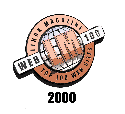

| Back to Jargon File Resources | Up to Site Map | $Date: 2003/10/27 05:33:04 $ |

(Warning: this page is full of logo graphics and may take a while to load! If you see broken graphics icons, get yourself a PNG-capable browser -- this is a no-GIFs website.)
The Jargon File Resources page has received the following entirely unsolicited awards:
A Magellan 4-star rating (their highest). Here's their logo:
An Underground Online 5-star rating (their highest). Here's their logo:
Cool Site of the Day for 19 March 1996 from New Scientist. Here's their logo:
Luckman Interactive has declared this site a winner of their Five Star Award (their highest). Here's their logo:
The Education Index named this ``an outstanding education-related site on the Web''. Here's their logo:
Zenation called this site one of the coolest 100 on the Web. Click on the ``The Top 100'' Menu Item or link to see the whole top 100 and where Zenation thought we fit in it.
Linux Magazine named this one of the Top 100 Linux sites. 
To our knowledge, no rating service has ever given the Jargon File Resources lower than its most excellent rating.
| Back to Jargon File Resources | Up to Site Map | $Date: 2003/10/27 05:33:04 $ |